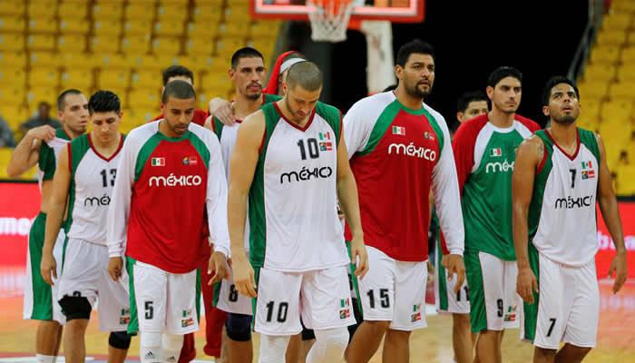
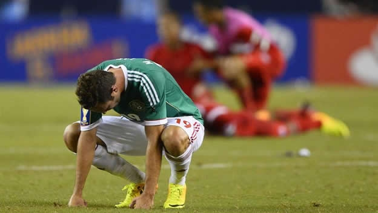

¿QUE LE HACE FALTA AL DEPORTE EN MEXICO? Y VIDEO
 Más que felices y orgullosos estamos los mexicanos, luego de saber que nuestro país ya se hizo acreedor a dos medallas de plata. En el futbol anda dando buenos pasos, debutó en tiro de arco con no tan malos resultados. Se tienen altas expectativas en algunas disciplinas deportivas, al menos en siete: nado de mariposa, levantamiento de pesas, remo individual, entre otras. Pero, ¿por qué sólo en esas? ¿Qué sucede con las demás disciplinas? Comparándonos con otros países como Estados Unidos, Rusia, Francia, Reino Unido, por mencionar algunos, siempre son a los que se les apuesta, de los que se espera sigan manteniendo en alto su récord de medallas; países que sí están muy por encima del nuestro.
Es sabido que México no cuenta con los apoyos suficientes para respaldar al deporte. No es tanto un apoyo económico, que no deja de ser importante. Es la falta de estructura, es la falta de una mejor organización y mejores métodos. Así como se tiene una estructura para la economía y el combate al crimen organizado, así debe haber una para el deporte. Por otra parte hay algo en nuestra ideología que también ha mermado el desarrollo deportivo. Y es que algunos ven, – o vemos-, al deporte como un castigo, al menos en la escuela así nos lo mostraban; pues implicaba un esfuerzo físico que muchos no estábamos dispuestos a hacer. Por ejemplo cuando al niño se le catigaba con dar tantas vueltas corriendo a la cancha por no llevar la tarea. Mejor sería que éste en vez de ser el castigo fuera el premio. Aún así, nuestro país se está haciendo presente en Londres 2012. Basta ver el entusiasmo y la emoción que han despertado Iván García, Germán Sánchez, Paola Espinoza y Alejandra Orozco con su desempeño al obsequiar a México medalla de plata. ¡Enhorabuena!